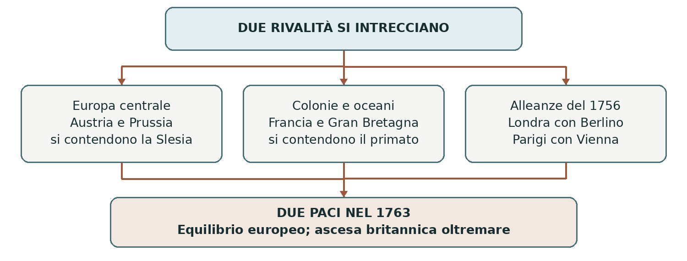

1756–1763 • Equilibrio europeo e competizione mondiale
La guerra dei Sette anni
La rivalità tra Austria e Prussia si intrecciò con la competizione coloniale tra Gran Bretagna e Francia. Ne nacque una guerra combattuta in continenti diversi, nella quale la forza delle flotte e l’accesso al credito contarono quanto le battaglie terrestri.
0. Domanda generatrice
Come si collegarono una regione dell’Europa centrale e il controllo di rotte e colonie lontane?
In sintesi Il sistema delle alleanze unì la contesa per la Slesia alla rivalità anglo-francese, dando al conflitto una dimensione mondiale.
1. Il mondo precedente
La pace di Aquisgrana del 1748 aveva lasciato la Slesia alla Prussia. Maria Teresa voleva recuperarla e
ridimensionare Federico II. La rivalità tra le due monarchie riguardava anche il prestigio e l’influenza nello
spazio tedesco. Nessuna sistemazione diplomatica aveva eliminato questo motivo di tensione.
Gran Bretagna e Francia competevano per commerci, colonie e basi navali. In Nord America l’espansione dei coloni britannici e le pretese francesi si scontravano nella valle dell’Ohio; i combattimenti erano iniziati già nel 1754. Le popolazioni indigene difendevano interessi propri e sceglievano alleanze. In India le compagnie europee agivano dentro conflitti e rapporti di potere locali.
In sintesi Due rivalità, una continentale e una marittima e coloniale, prepararono l’allargamento del conflitto.
2. Le fratture
Nel 1756 avvenne la cosiddetta rivoluzione diplomatica: la Gran Bretagna si avvicinò alla Prussia, anche
per proteggere l’Hannover, legato alla dinastia del suo sovrano; l’Austria si alleò con la Francia, sua
tradizionale rivale. L’interesse strategico prevalse sulla durata delle vecchie ostilità.
Federico II temeva l’accerchiamento, ma fu anche protagonista dell’escalation: nell’agosto 1756 invase la Sassonia, dando avvio alla guerra nell’Europa centrale. Austria, Francia e Russia si trovarono schierate contro la Prussia. La guerra coloniale e quella continentale entrarono nello stesso sistema di alleanze.
In sintesi Nuove alleanze e attacco prussiano alla Sassonia collegarono i diversi conflitti.
3. Attori, gruppi e conflitti
Gli schieramenti europei non esauriscono i protagonisti di una guerra combattuta anche in America, India e sui mari.
| Attori | Obiettivi e interessi |
|---|---|
| Prussia e Gran Bretagna | Federico II difende la Slesia; Londra punta alla supremazia navale e coloniale e finanzia l’alleato. |
| Austria, Francia e Russia | Vienna vuole la Slesia; Parigi contrasta i britannici; la Russia vuole contenere la Prussia. |
| Sassonia, Svezia e altri Stati | Partecipano alla guerra europea con obiettivi territoriali e di sicurezza propri. |
| Altri protagonisti | Nazioni indigene americane e poteri indiani combattono e negoziano. La Spagna entra in guerra nel 1762. |
In sintesi Gli alleati combattevano una guerra comune, ma perseguivano obiettivi diversi nei vari teatri.
4. Il processo storico
La Prussia tra vittorie e rischio di crollo
Federico II vinse a Rossbach e Leuthen nel 1757, ma la superiorità numerica dei nemici e il logoramento
misero a rischio la Prussia. La sconfitta di Kunersdorf nel 1759 mostrò la gravità della situazione. Le
risorse finanziarie britanniche aiutarono a sostenere lo sforzo prussiano.
Nel 1762 morì la zarina Elisabetta. Il successore Pietro III, ammiratore di Federico II, fece pace e restituì
le conquiste russe. Poco dopo fu rovesciato da Caterina II, che abbandonò l’alleanza militare con la
Prussia ma non riprese la guerra contro di essa. L’uscita russa cambiò radicalmente l’equilibrio delle forze.
America, India e guerra navale
La Gran Bretagna concentrò risorse sulla flotta e sulle operazioni coloniali. La conquista di Québec nel 1759 e la resa di Montréal nel 1760 portarono alla caduta del Canada francese. Le alleanze indigene furono decisive e variabili: i territori contesi non erano spazi vuoti in attesa di occupazione.
In India la Compagnia britannica delle Indie orientali accrebbe il proprio potere. La vittoria di Plassey nel 1757, ottenuta anche attraverso accordi con avversari del sovrano del Bengala, favorì questa espansione. Non significò la conquista di tutta l’India. Dopo l’ingresso spagnolo nel conflitto nel 1762, i britannici occuparono anche L’Avana e Manila, poi restituite.
Due paci, due risultati differenti
La pace di Parigi del 10 febbraio 1763 regolò il conflitto coloniale. La Francia cedette il Canada alla Gran
Bretagna, che ricevette la Florida dalla Spagna. I territori francesi a est del Mississippi passarono in larga
parte ai britannici; la Louisiana occidentale e New Orleans erano state assegnate alla Spagna con un
accordo separato del 1762.
La Francia recuperò alcune basi commerciali in India, soggette a limitazioni, ma la posizione britannica era
ormai preponderante. La pace di Hubertusburg del 15 febbraio 1763, tra Austria, Prussia e Sassonia,
confermò invece sostanzialmente l’assetto europeo precedente: la Slesia rimase alla Prussia e la Sassonia
fu restituita al suo sovrano.
In sintesi La carta europea cambiò poco; i rapporti coloniali cambiarono molto, a vantaggio della Gran Bretagna.
Lo snodo decisivo
L’uscita russa salvò la Prussia da un pericolo decisivo; la superiorità navale e finanziaria britannica consentì successi su teatri lontani. Gli esiti ebbero cause differenti, pur appartenendo alla stessa guerra.
5. Le fonti in dialogo
Parigi, 1763: territori e abitanti
Il trattato è una fonte diplomatica sottoscritta dalle monarchie vincitrici e sconfitte. L’articolo IV riguarda il Canada; qui il suo contenuto è parafrasato.
Contenuto — sintesi didattica: La Francia trasferisce alla corona britannica il Canada e i diritti di sovranità che vi rivendicava. Il sovrano britannico ammette la pratica cattolica nei limiti delle proprie leggi e consente agli abitanti già sudditi francesi di emigrare alle condizioni previste.
Interpretazione e limiti: La sovranità è presentata come un diritto cedibile tra monarchi. Il testo non riconosce alle nazioni indigene il potere di decidere il destino dei territori: occorre confrontarlo con altre testimonianze.
Domanda di lettura: Quali interessi degli abitanti compaiono nel trattato e quali soggetti restano esclusi dalla decisione?
Fonte: Yale, Avalon Project — Treaty of Paris, 1763
In sintesi Le clausole mostrano la redistribuzione imperiale e i limiti della prospettiva dei negoziatori europei.
6. Conseguenze e nuovo assetto
La Gran Bretagna emerse come principale potenza marittima e coloniale, ma accumulò un debito elevato. Le successive richieste fiscali rivolte alle colonie nordamericane alimentarono un conflitto politico che avrebbe contribuito alla Rivoluzione americana. La vittoria aprì così problemi nuovi.
La Prussia conservò la Slesia e consolidò il rango di grande potenza. La Francia perse ampi possedimenti, pur mantenendo importanti colonie e attività commerciali. I costi della guerra pesarono sui bilanci degli Stati e sulle popolazioni coinvolte.
In sintesi La pace rafforzò britannici e prussiani senza risolvere le tensioni fiscali, coloniali e continentali.
7. Conclusione
La guerra dei Sette anni fu mondiale per l’intreccio dei teatri e degli interessi. In Europa confermò l’ascesa prussiana; fuori d’Europa ampliò la supremazia britannica, creando nuove tensioni nell’impero vincitore.
Sintesi finale 1754: cominciano gli scontri coloniali in Nord America. 1756: nuove alleanze e invasione prussiana della Sassonia. La guerra coinvolge Europa, America, India e oceani. 1762: la Russia esce dal conflitto; nel 1763 si firma la pace. Gran Bretagna più forte nelle colonie; Slesia ancora prussiana.
Per studiare e collegare
Coordinate essenziali
Europa centrale, Atlantico, Nord America, Caraibi, Africa e India; operazioni anche nelle Filippine. Guerra europea 1756–1763; antecedente americano dal 1754.
Saperi irrinunciabili
1. La contesa per la Slesia restava aperta dopo il 1748.
2. La rivalità anglo-francese aveva dimensione coloniale.
3. Nel 1756 Austria e Francia si allearono.
4. Gran Bretagna e Prussia formarono lo schieramento opposto.
5. Federico II invase la Sassonia nel 1756.
6. Nel 1762 la Russia uscì dal conflitto.
7. La Gran Bretagna ottenne successi navali e coloniali.
8. Parigi assegnò Canada e Florida alla Gran Bretagna.
9. Hubertusburg confermò la Slesia alla Prussia.
10. Debiti e governo delle colonie crearono nuove tensioni.
Mappa concettuale

La pace continentale e quella coloniale hanno esiti differenti: occorre studiarle insieme.
Strumenti e attività
Linea del tempo ragionata
| Quando | Che cosa cambia |
|---|---|
| 1754 | Iniziano gli scontri anglo-francesi in Nord America. |
| 1756 | Rivoluzione diplomatica; invasione della Sassonia. |
| 1757 | Rossbach e Leuthen in Europa; Plassey in India. |
| 1759–1760 | Crisi prussiana; conquista britannica del Canada. |
| 1762 | Uscita della Russia; ingresso della Spagna in guerra. |
| 1763 | Parigi regola i domini coloniali; Hubertusburg l’Europa centrale. |
Vocabolario essenziale
Rivoluzione diplomatica. Rovesciamento delle principali alleanze europee nel 1756.
Egemonia marittima. Preminenza nel controllo di mari, rotte e basi navali.
Compagnia privilegiata. Impresa dotata di diritti esclusivi e talvolta di poteri politici.
Debito pubblico. Risorse prese in prestito dallo Stato, da restituire con interessi.
Attività di comprensione
1. Confronta Parigi e Hubertusburg: partecipanti, territori e risultati.
2. Spiega il ruolo di Russia e Gran Bretagna nella sopravvivenza della Prussia.
3. Ricostruisci il nesso tra vittoria britannica, debito e tensioni con le colonie americane.
Fonti e approfondimenti
Lezione di riferimento: «moderna.ppt», diapositiva 16. I collegamenti seguenti permettono di leggere la fonte e approfondire i passaggi centrali.
National Army Museum — Seven Years War
Yale, Avalon Project — Testo del trattato di Parigi